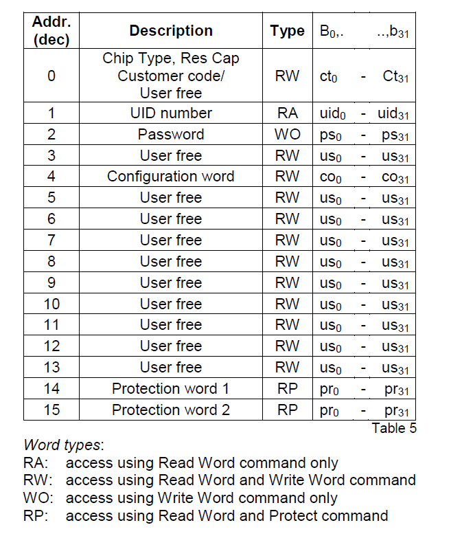

复制门禁卡--EM4305模拟ID卡的数据转换方法
EM4305有很多强大的功能，比如加密或者写保护。但是如何用一个512bit的EM4305模拟一张普通的ID卡(EM4100)?文章的最后附有转换程序，和在一张卡上写入多张ID卡的数据实现一卡刷多个门的方法。
EM4305及普通ID卡概述
工作模式
EM4305有两种工作模式，Default Read与Forward Link Communication模式。在卡片接近读卡器时，线圈中产生电流。当加在EM4305的电压超过门限电压POR以后，芯片开始初始化。即芯片读取Page4中的配置信息，然后开始Default Read模式。
在Default Read模式下，芯片从Page5开始不断地发送卡片上的信息，直到配置信息中规定的LWR(Last Default Read Word)，即发送的最后一个Page。发送完最后一个Page之后，芯片又立即重新开始发送Page5。在这个模式下，如果读卡器的电磁场停止时间超过Tmono(Typ. 40μs)，芯片就会开始Forward Link Communication模式并等待读卡器发送命令。执行完命令后，芯片又会恢复Default Read模式。
普通的ID卡(EM4100)只有一种工作模式。当放置在电磁场中，线圈产生电流，芯片供电后，循环往复的发送芯片存储的64bit数据，直到线圈远离电磁场，电流停止。门禁卡读卡器只可以发出不变的电磁场并读取芯片发来的数据。如果把EM4305卡放置于普通ID卡读卡器上，EM4305只会进入Default Read模式，即主动发送数据，因此只要设置好存储数据即可。
数据存储形式
EM4305一共512bit存储空间，共分为16个Page(Page0 - Page15)，每个Page 32bit，也就是8位16进制数。其中Page4是配置信息存储的位置，而Default Read模式下发送的数据是Page5 - Page13的数据。需要注意的是，芯片是the LSB principle is always respected，即每个字节都是倒着存的。 比如存储1234这个数据，转换一下就是0x04d2(二进制是00000100,11010010)存储的时候要把每个字节倒过来，即00100000,01001011十六进制是0x204b。
因为用不到加密等其他高级功能，所以不讨论Page4-Page13以外的内容。

数据计算方法
配置信息格式Page4
Page4里存储了许多信息，包括卡的调制格式，传输速率，发送的Page还有加密功能的设置。为了描述方便，把page4的32bit信息定义为co0,co1,…,co31。
co0-co5是存储传输速率的，co6-co9是存储调制格式的。一般使用Manchester RF/64，所以co0-co9就是1111,1010,00
co14-co17是存储LWR信息，即最后传输的Page。这个数值只能是5-13，否则卡不会输出任何一个Page。在Default模式下，芯片将循环发送第五页到这个定义的最后页的数据。这四个数也遵循LSB，比如要发送到12页，即1100，存储的数据co14-co17是0011。因为id卡是64bit，所以只要用两个page就可以模拟，所以LWR=6，芯片循环发送page5,6的信息。此时co14-17=0110
其他位都用不到，就补0。转换成十六进制就是0xFA0118000，最后每字节翻转一下就是0x5F800100。
ID卡内容page5,page6
ID卡中信息在上一篇中讲过，即开头有9bit的1。接下来是4bit数据+1bit偶检验的两位版本号和八位id号。最后是4个列校验，最后一位是停止位0。
EM4305模拟id卡也是把同样的64bit存在page5,6中。重点是如何通过id号码计算出这64bit数据。开始9个1不用考虑，接下来10bit版本号可以直接写0，因为大部分读卡器不检测这一部分，而且id号码也看不出版本号。剩下的部分也不难，通过一个例子来说明。
还是那张卡，0006381769，转换成16进制是0x006160c9，加上校验码，就是
还有列校验和结束符0000 0
0000 0
0110 0
0001 1
0110 0
0000 0
1100 0
1001 0
就完成了。0100 0
把所有信息列出来，就是
每8bit翻转，就是1111,1111,1000,0000,0000,0000,0000,0011,
0000,0110,1100,0000,0110,0010,0100,1000
转换为16进制，即1111,1111,0000,0001,0000,0000,1100,0000,
0110,0000,0000,0011,0100,0110,0001,0010
所以在卡中写入的数据为0xFF0100C0
0x60034612
Page4: 5F800100
Page5: FF0100C0
Page6: 60034612
C语言实现
准备
Page4的值一般是固定的，而Page5,6的值需要计算。这三个数都是32bit的数，所以需要用unsigned int存储。快速取出从右往左第k+1位的数字可以使用
第一步 计算数据
|
|
其中write(x)的功能就是把x写入当前的page中，可以用如下方法实现，pos的初始值设为19（因为page5前面有固定的19位数据），然后每次写入一次数据pos+1。
第二步 翻转数据
翻转的过程可视为二进制下
(a0,a1,a2,a3,a4,a5,a6,a7) -> (a7,a6,a5,a4,a3,a2,a1,a0)
每一位都翻转需要移动8次，计算次数较多，所以可以使用如下两步来解决问题：
1.十六进制相邻两位互换
(a0,a1,a2,a3),(a4,a5,a6,a7) -> (a4,a5,a6,a7),(a0,a1,a2,a3);
2.每个十六进制数自身翻转
(a4,a5,a6,a7),(a0,a1,a2,a3) -> (a7,a6,a5,a4),(a3,a2,a1,a0)
只需要一个预定义好的自身翻转数组即可。比如0001->1000 (1变8) 就令tr[1]=8。最终tr数组为：
|
|
翻转代码为：
|
|
程序下载
开发更多用途…
EM4305有512bit存储空间，只用来克隆一张ID卡实在是太浪费了。因为要带好多张门禁卡，所以就突发奇想把他们都写在同一张EM4305上，是不是就能一卡多刷了呢？
理论上是可以的。因为EM4305会循环发送page5-LWR中的数据。而读卡器是遇到连续9个1就会开始读卡。所以写入多个数据的时候，读卡器最先会读到写入的第一个ID，如果不匹配的话，读卡器会报错，但是EM4305会继续发送信息。只要读卡器反应速度够快，EM4305发送的第二个ID也会被读卡器读到，一直到匹配成功。
写入数据时，需要注意LWR的更改。之前因为只有一个ID，所以只需要两个Page，因此LWR=6,Page4=5F800100。如果要写入两个ID，就需要4个page，LWR=8，这时co14-co17就是0001，Page4=5F000200。然后把两个ID分别写入Page5,6和Page7,8。因为Page5和Page7的开头都有9个1所以读卡器只要读到这部分都会开始接收ID。
实际测试通过。读卡器会不断的循环提示失败和成功。这么做也有个缺点，如果写入的卡太多，每次都要等错误好几次才能成功开门。